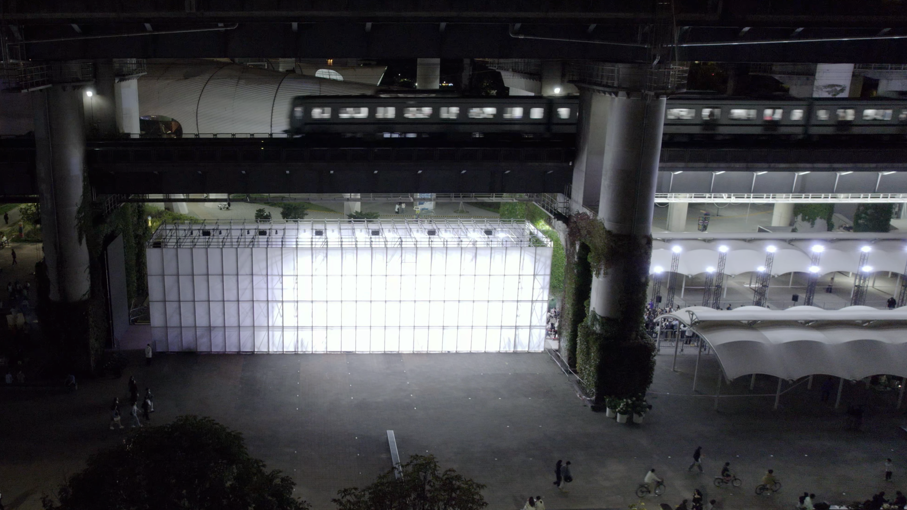
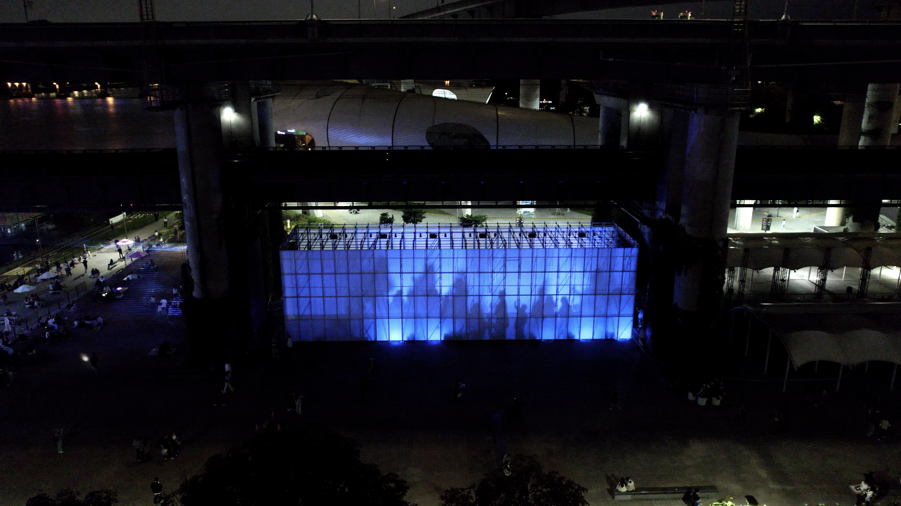

Lobby · Media Wall라이트 베일
은은한 흐름의 빛으로 공간을 부드럽고 고급스럽게 정리합니다.
LC CURATION
공간의 성격과 흐름을 읽고,
그에 어울리는 미디어아트와 분위기를 제안합니다.
공간 유형, 분위기, 디스플레이 방식을 입력하면
어울리는
미디어아트와 분위기를 제안합니다.
공간 유형, 규모, 디스플레이 방식, 운영 목적을 파악합니다.
공간의 흐름과 감각적 톤에 맞는 아트 컬렉션을 선별합니다.
큐레이션 리포트와 함께 구체적인 설치 방안을 제시합니다.
정식 오픈 전 제안 방식의 일부를 미리 확인합니다.
분석 결과 예시
추천 분위기 예시

Lobby · Media Wall은은한 흐름의 빛으로 공간을 부드럽고 고급스럽게 정리합니다.

Facade · LED Wall절제된 움직임으로 공간에 조용한 몰입감과 세련된 긴장을 더합니다.